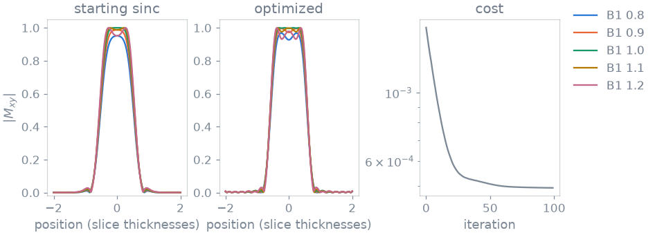

Note
Go to the end to download the full example code or to run this example in your browser via Binder.
RF pulse design by optimal control#
In this example you design the samples of a slice-selective RF pulse by gradient descent through a Bloch simulation of what they do [1]. Across a body at 3 T the transmit field B1 varies by about a fifth either way, and the flip angle inside the slice varies with it. You reshape a 90 degree excitation so that it stays close to 90 degrees over that range.
Prerequisites: Course lessons 1. Your first simulation and 2. Advanced physics.
Pulse and slice#
The pulse has 128 samples. Under the slice-select gradient, each sample
rotates a spin at x slice thicknesses from the centre by
2 pi TBW x / 128 about z, where TBW is the time-bandwidth product. The
drive of each sample is in radians, so the design needs no raster and no
gradient amplitude: any pulse with this time-bandwidth product can play it.
The starting point is a Hamming-windowed sinc with the area of a 90 degree flip. That is a small-tip design, played here at a large tip:
import math
import torch
SAMPLES, TBW = 128, 4.0
x = torch.linspace(-2.0, 2.0, 161, dtype=torch.float64)
turn = 2 * math.pi * TBW / SAMPLES * x
t = torch.arange(SAMPLES, dtype=torch.float64) - (SAMPLES - 1) / 2
sinc = torch.sinc(TBW * t / SAMPLES) * (
0.54 + 0.46 * torch.cos(2 * math.pi * t / SAMPLES)
)
start = sinc / sinc.sum() * (math.pi / 2)
Transmit field#
Simulate every spin at five transmit scalings, from 0.8 to 1.2 of nominal.
compose_spinor multiplies the rotations of all samples into one spinor
(a, b) per spin, and the transverse magnetization after a pulse applied
to magnetization along +z is 2 conj(a) b:
from blochsim import compose_spinor
B1 = torch.tensor([0.8, 0.9, 1.0, 1.1, 1.2], dtype=torch.float64)
def excited(real, imag):
"""|Mxy| after the pulse, shape (B1, x)."""
drive = (real + 1j * imag)[:, None, None] * B1[None, :, None]
a, b = compose_spinor(drive, turn.expand(len(B1), -1))
return (2 * a.conj() * b).abs()
Cost#
Inside the slice the magnetization should be fully transverse. Outside it should be untouched. The transition band between them is left free. A small penalty on the pulse energy prevents the optimizer from trading power for flatness:
inside = (x.abs() < 0.4).double()
outside = (x.abs() > 0.75).double()
def cost(real, imag):
transverse = excited(real, imag)
miss = inside * (transverse - 1.0) ** 2 + outside * transverse**2
energy = (real**2 + imag**2).sum() / (start**2).sum()
return miss.sum() / (inside.sum() + outside.sum()) / len(B1) + 1e-4 * energy
Optimization#
The real and imaginary parts of every sample are the design parameters, with
no limits. To respect the scanner’s peak B1, you would wrap them in
Bounded:
from blochsim.optim import SequenceDesign
design = SequenceDesign(
cost, real=start.clone(), imag=torch.zeros(SAMPLES, dtype=torch.float64)
)
result = design.minimize(iterations=100, learning_rate=2e-4)
real, imag = result.parameters["real"], result.parameters["imag"]
with torch.no_grad():
before = excited(start, torch.zeros_like(start))
after = excited(real, imag)

Inside the slice, the flip now varies less across the transmit range, most of all where B1 is low. Outside the slice the leakage stays at the level of the sinc. Compare the mean \(|M_{xy}|\) inside the slice at each B1:
starting sinc: [0.895, 0.94, 0.967, 0.976, 0.969]
optimized: [0.945, 0.981, 0.996, 0.989, 0.963]
Specification#
What this example did, stated the way you would ask an agent for it:
With blochsim, design a 128-sample slice-selective 90 degree excitation
with time-bandwidth product 4, starting from a Hamming-windowed sinc.
Simulate each spin at B1 scalings 0.8 to 1.2 with compose_spinor. Minimize
the squared miss from |Mxy| = 1 inside the slice and 0 outside, plus a
small energy penalty, with SequenceDesign over the real and imaginary
parts of the samples. Report the mean |Mxy| in the slice at each B1,
before and after.
Total running time of the script: (0 minutes 7.809 seconds)